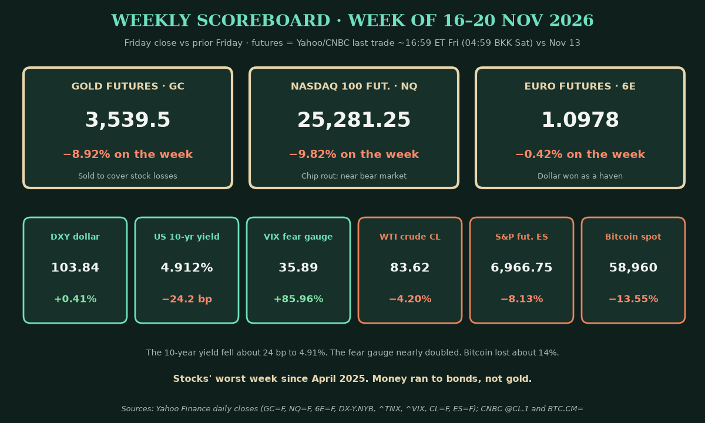
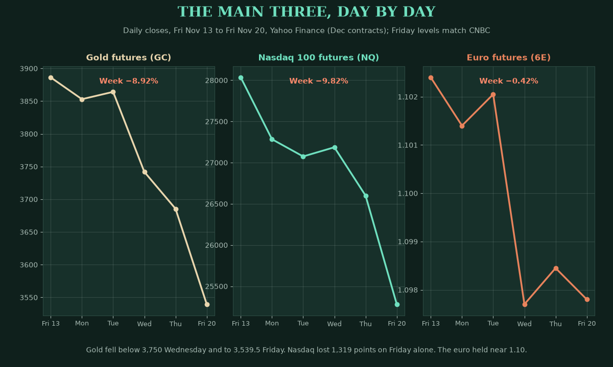
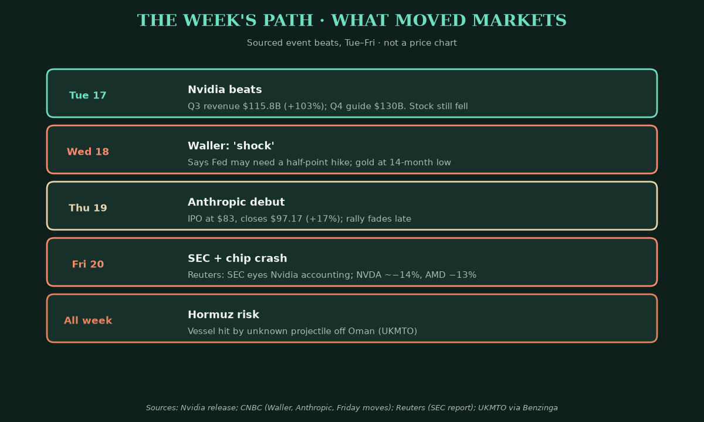
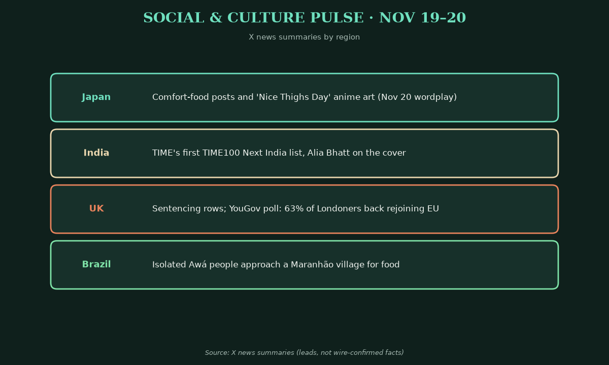
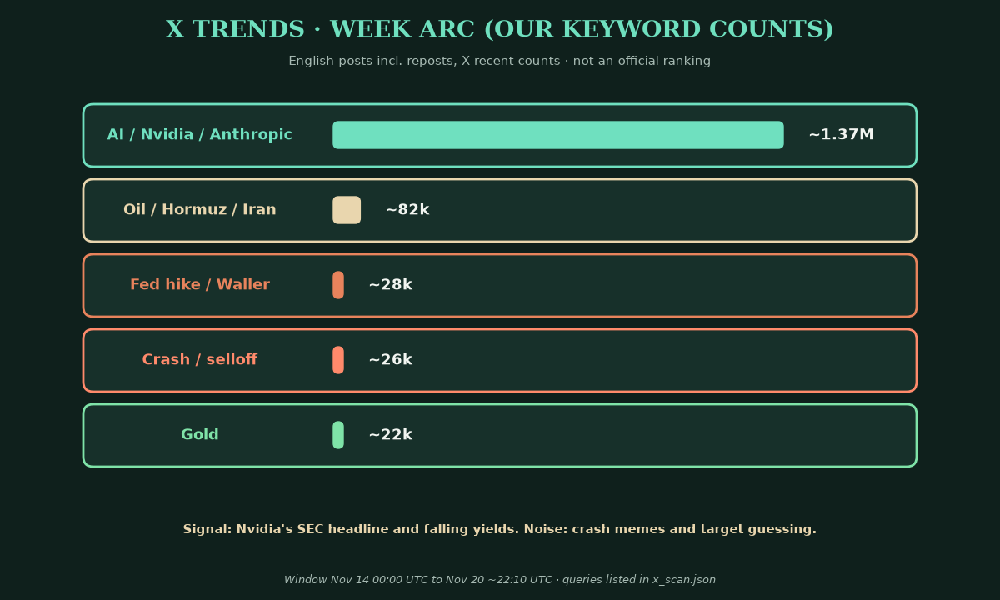
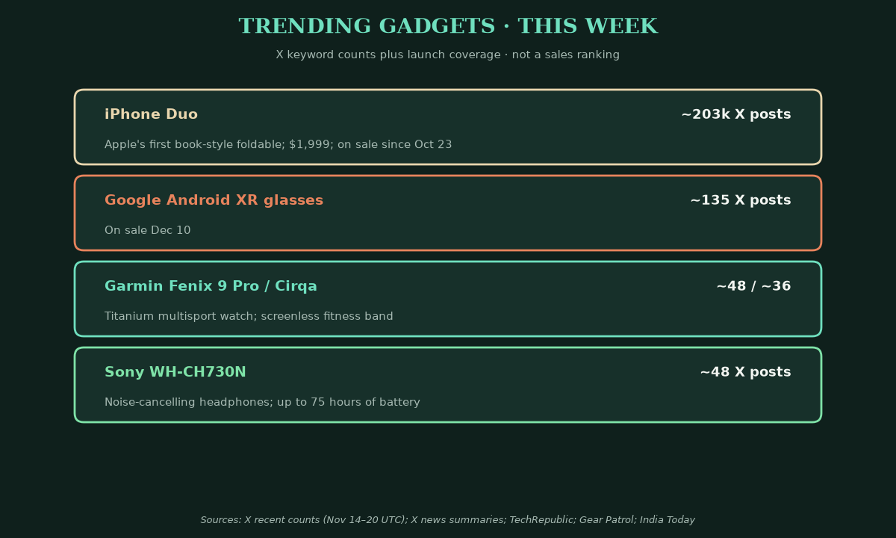
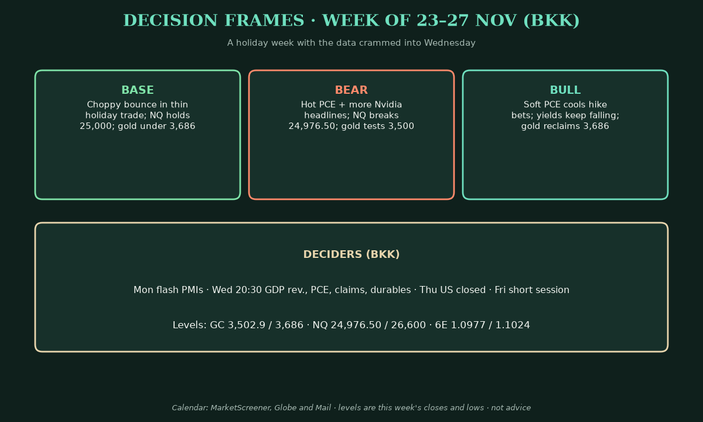

Saturday Weekly Markets Wrap · Sat Nov 21, 2026 (BKK)
April · Weekly Markets Wrap · 2026-11-21
Week of Mon Nov 16 to Fri Nov 20. Futures are Yahoo or CNBC last trade near 16:59 ET Friday (about 04:59 Saturday Bangkok time), against the prior Friday's close, unless noted.
Headline: the AI trade cracked. Stocks had their worst week since April 2025, and gold fell with them. Gold futures fell 8.92% to 3,539.5. Nasdaq 100 futures fell 9.82% to 25,281.25. The euro fell 0.42% to 1.0978.
So what? Nvidia beat its numbers, Anthropic's IPO popped, and investors sold anyway. Friday brought a reported SEC look at Nvidia's accounting, and the S&P 500 entered a correction (10% below its high). Money ran to bonds, not gold.

1) The main three
The takeaway: gold had a forced-selling week, Nasdaq nearly hit a bear market, and the euro barely moved.

- Gold futures (GC, Dec): 3,539.5, −8.92% on the week, at 04:59 BKK Saturday (Yahoo; CNBC @GC.1 3,539.40 at 16:59 ET). The base is the Nov 13 close of 3,886.3. Friday's low was 3,502.9 (CNBC). Driver: traders sold gold to cover stock losses, while a December Fed hike stayed priced (Reuters via CNBC). Friday's official CME settle was not separately confirmed.
- Nasdaq 100 futures (NQ, Dec): 25,281.25, −9.82%, at 04:59 BKK (Yahoo; CNBC 25,284.25). Driver: chip stocks collapsed. The cash Nasdaq-100 fell 5.6% Friday and was briefly 20% below its high, the usual bear-market line (CNBC).
- Euro futures (6E, Dec): 1.0978, −0.42%, at 04:59 BKK (Yahoo and CNBC). Driver: the dollar won as a haven (a safe place in a panic). ECB officials, including Nagel, signal a December hike too (Reuters via Investing.com), which limited the damage.
Context. DXY was 103.839, +0.41% at 04:59 BKK (ICE via Yahoo; CNBC 103.84). DXY measures the dollar against six major currencies. The US 10-year yield ended at 4.912%, down 24.2 basis points on the week (Cboe close at 02:59 BKK; CNBC showed 4.95% at 05:05 BKK). A basis point is 0.01 percentage point. Falling yields mean bond prices rose. The VIX was 35.89, +85.96% (Cboe, 04:15 BKK). The VIX is Wall Street's fear gauge. Crude (CL, Jan) closed at $83.62, −4.20% at 04:59 BKK (Yahoo, January contract both weeks, because the December contract expired Friday at $84.09, CNBC). ES was 6,966.75, −8.13%, at 04:59 BKK (Yahoo; CNBC 6,966.25). Bitcoin was $58,960, −13.55%. That endpoint is CNBC/Coin Metrics BTC.CM= 58,959.90 at 05:09 BKK Saturday (17:09 ET Friday). The base is the same CNBC quote a week earlier, 68,200.92 at 17:08 ET Nov 13.
2) What happened
The takeaway: good AI news stopped working. When good news can't lift a stock, the problem is the price, not the news.

- Nvidia beat. Q3 revenue was $115.8B, +103% on the year. It guided Q4 to $130B (Nvidia release). The stock still fell.
- Waller turned up the heat Wednesday. He said the Fed may need to "shock people" with a half-point hike (CNBC). That is twice the normal step.
- Anthropic's IPO popped, then dropped. Priced at $83, it closed Thursday at $97.17, then lost 8.5% Friday (CNBC).
- Friday's crash. Reuters reported the SEC is examining Nvidia's accounting. Nvidia fell about 14%, AMD more than 13%, Micron almost 14% (CNBC).
- Stocks' worst week since April 2025. S&P 500 6,910.39 (−8.61%). Nasdaq Composite 22,617.73 (−10.02%), now negative for the year. Dow 48,147.33 (−8.02%). Semiconductors −17.13% (Yahoo, CNBC).
- Asia and Europe followed. Nikkei −7.70%, KOSPI −7.95%, Hang Seng −5.19%. Taiwan fell 6.23% on Friday alone (CNBC). Euro Stoxx 50 −6.97% (Yahoo).
- Hormuz stayed live. A vessel was hit by an "unknown projectile" off Oman (UKMTO via Benzinga). Brent still fell to $89.87, −6.23% (Yahoo, Jan).
3) Social and culture pulse
The takeaway: outside finance, the feeds stayed local and light.

- Asia. Japan's feed mixed comfort-food posts and "Nice Thighs Day" anime art (a Nov 20 wordplay holiday). India talked about TIME's first TIME100 Next India list, with Alia Bhatt on the cover.
- Europe. UK feeds argued about sentencing cases and a YouGov poll for London's mayor showing 63% of Londoners back rejoining the EU.
- Americas. Brazil's feed carried members of the isolated Awá people approaching a village in Maranhão for food.
- Crypto. X summaries said more than $1B in leveraged bets were wiped out in 24 hours as Bitcoin slid. X summary, not verified.
4) X trends: the week arc
The takeaway: AI talk dwarfed everything, but "crash" talk spiked only on Friday.

- AI / Nvidia / Anthropic: about 1.37M posts, steady at 165k–240k a day.
- Oil / Hormuz / Iran: about 82k, peaking Tuesday.
- Fed hike / Waller: about 28k, peaking near 8k Wednesday.
- Market crash / selloff: about 26k, with 10k on Friday alone. Gold: about 22k, rising all week.
- Lean scan (leads only). Timiraos noted the Dow's −8% week was its biggest since March 2020; that matches our Yahoo math. He also flagged Lisa Cook's case that policy is too easy; not used as fact. Smashelito mapped ES failing breakouts all week, which fits the close. JJ posted ES and Nvidia levels; no paid-room promos relayed. Tavi: nothing market-relevant this week.
- Signal: Nvidia's SEC headline and falling yields. Noise: "crash" memes and price-target guessing.
5) Trending gadgets
The takeaway: Apple's foldable still owns gadget chatter by a mile.

- iPhone Duo: about 203k X posts (all languages). It is Apple's first book-style foldable, $1,999, on sale since Oct 23 (X news summaries).
- Google's Android XR glasses: about 135. On sale Dec 10 (TechRepublic, last week).
- Garmin Fenix 9 Pro: about 48, and the screenless Cirqa band: about 36 (Gear Patrol).
- Sony WH-CH730N headphones: about 48. Up to 75 hours of battery (India Today).
6) Decision frames for traders and investors
The takeaway: a short holiday week, with all the data crammed into Wednesday.

- Base case (medium): a choppy bounce in thin holiday trade. NQ holds 25,000. Gold stays below 3,686.
- Bear case: hot PCE inflation plus more Nvidia headlines. NQ breaks Friday's 24,976.50 low. Gold tests 3,500.
- Bull case: soft PCE cools hike bets. Yields keep falling, and gold reclaims 3,686.
- Deciders (BKK): Mon flash PMIs (business surveys) for Europe and the US. Wed 20:30 US Q3 GDP revision, October PCE inflation (the Fed's preferred gauge), jobless claims and durable goods (MarketScreener, Globe and Mail). Thu US markets closed for Thanksgiving. Fri shortened session.
- For Jim: Gold: 3,686 is the line to reclaim; 3,502.9 is the floor. NQ: 26,600 must come back first; 24,976.50 is the low. Euro: 1.0977 is the low close; 1.1024 is last Friday's close.
Interpretive aside: Scorpio season ends this weekend as the Sun enters Sagittarius, the sign of overreach and big bets. Symbol, not signal.
Confidence: futures, indices, yields and VIX are high (Yahoo, CNBC). Nvidia's figures come from its release. The SEC report is Reuters sourcing, not an SEC statement. Culture items are X summaries. X counts are our own keyword queries.